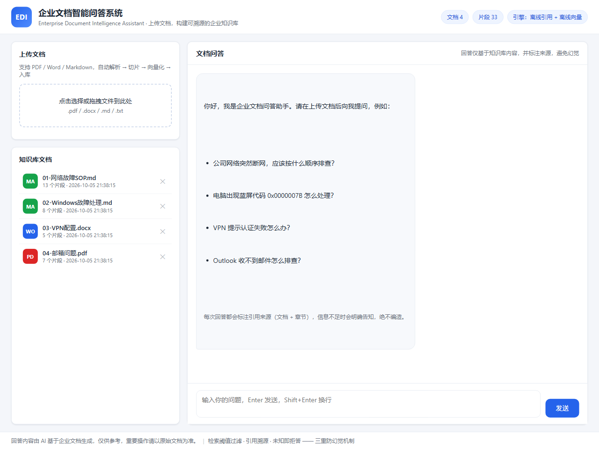
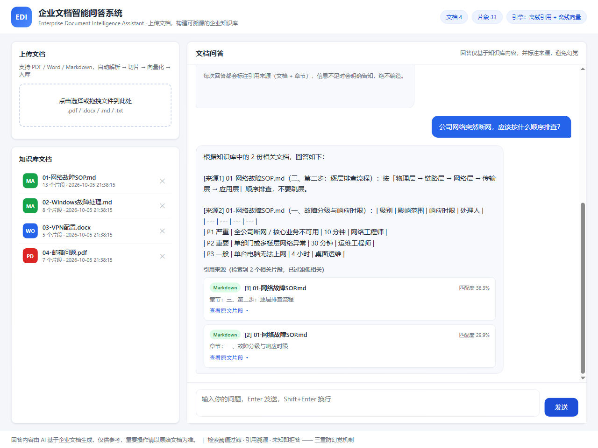
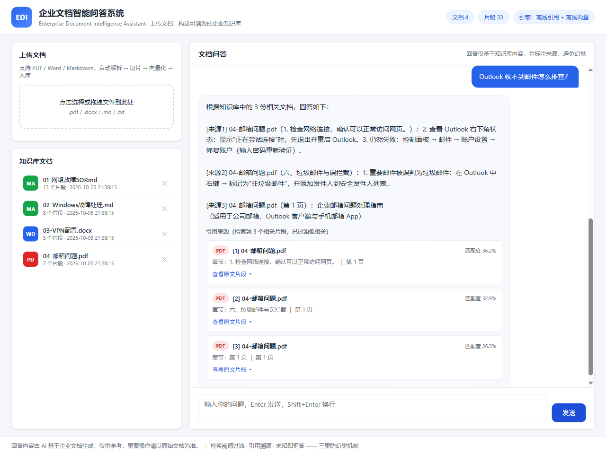
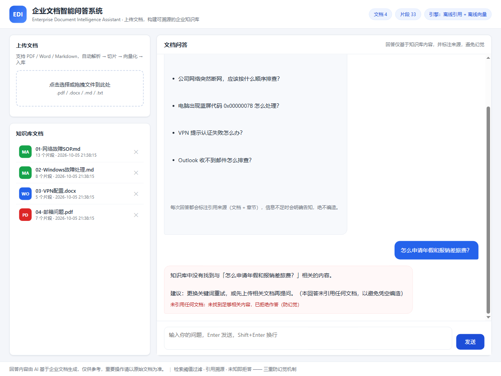
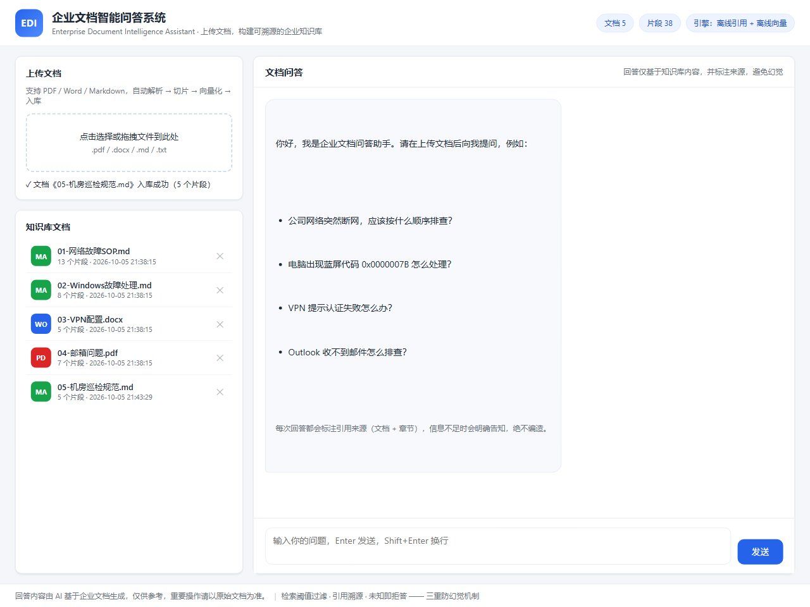
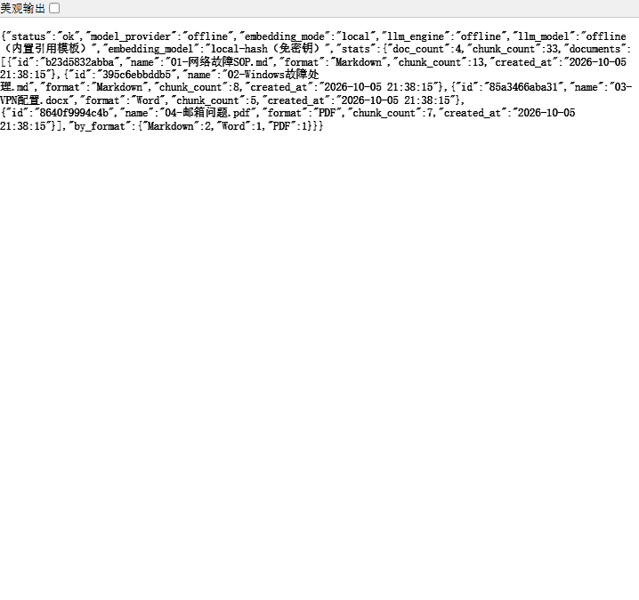
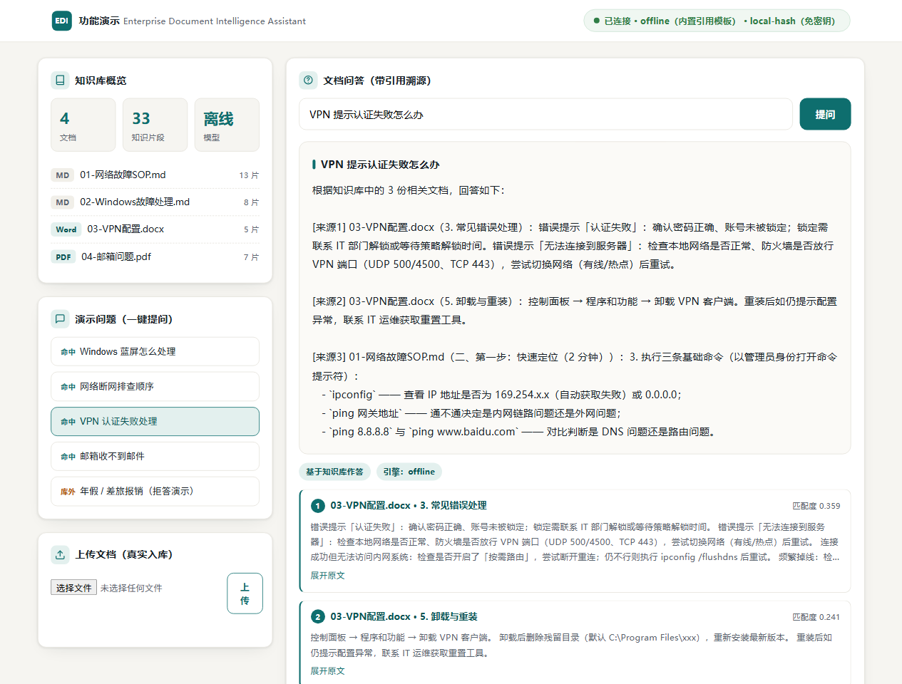

上传 PDF / Word / Markdown，系统自动完成解析、切片、向量化、检索与 AI 作答；每条回答附带来源文档、章节、页码与原文片段，从机制上杜绝凭空编造。
企业 IT 运维中，网络故障、Windows 故障、VPN 配置、邮箱问题等咨询高度重复。本系统把散落在 SOP、手册、PDF 中的运维知识统一入库，让员工 7×24 自助查询。
从员工提问到带引用的回答，全链路代码实现（FastAPI 编排），无第三方编排平台依赖。
PDF / Word / Markdown，白名单校验、大小限制、防路径穿越
PDF 页内章节识别、Word 标题样式、Markdown 标题层级
600 字 + 100 字重叠，保留章节/页码溯源元数据
语义 Embedding 或免密钥离线向量，JSON 本地持久化
语义 60% + 词法 40%，粗排召回 Top-8 候选
精排候选（词频/标题/位置加权，或大模型打分），阈值过滤后取 Top-4
大模型依据证据作答，强制 [来源编号] 标注并校验一致性
混合检索 + Rerank 精排 + 相似度阈值：低相关片段根本不会进入回答，从源头切断幻觉。
系统级 Prompt：只准使用文档片段作答，不确定必须明说，不得调用背景知识。
LLM 输出的 [n] 编号必须落在真实证据范围内，越界引用自动拦截（API 模式）。
检索不到足够相关内容时明确告知，不生成"看似合理"的编造答案。
AI Provider 抽象层：仅需修改 MODEL_PROVIDER 环境变量，网关地址与模型名自动匹配，无需改动任何代码。
| Provider | 厂商 | 默认模型 | Embedding | 网关 |
|---|---|---|---|---|
| qwen | 通义千问 | qwen-plus | text-embedding-v3 | 国内直连 |
| zhipu | 智谱AI GLM | glm-4-flash（免费） | embedding-2 | 国内直连 |
| deepseek | DeepSeek | deepseek-chat | 自动回退离线向量 | 国内直连 |
| moonshot | 月之暗面 Kimi | moonshot-v1-8k | 自动回退离线向量 | 国内直连 |
| siliconflow | 硅基流动 | Qwen/Qwen2.5-7B | BAAI/bge-m3 | 国内直连 |
| openai | OpenAI | gpt-4o-mini | text-embedding-3-small | 海外 · 需代理 |
完整部署指南见仓库 README_CN.md；风险审查清单见 docs/CHINA_ACCESS_REVIEW.md。
无 CDN、无 npm、无第三方 JS，静态资源随服务同源托管，国内访问无拦截。
pip 内置清华源；提供镜像加速器配置与国内基础镜像备选方案。
无国外存储与数据库；索引为本地 JSON 文件，可整体备份迁移。
支持 Gitee（码云）镜像仓库，国内克隆速度可达数 MB/s。






